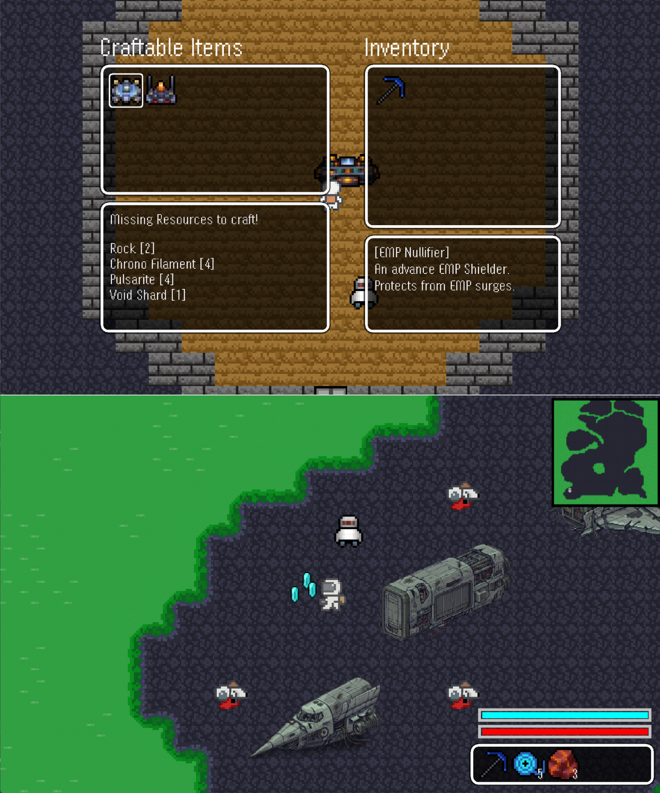

Space-Miner
GitHub2D Top-Down Survival/Adventure Game
Space-Miner is a personal project, completely independent of any coursework, that has been the most fun I’ve had coding. This project stems from my passions for coding, gaming, and space exploration It’s a full-fledged survival/adventure game for Windows, built entirely from scratch in raw Java without any external libraries or game engines. The game is currently under active development with plans for a full release on major game stores.
- Developed core gameplay systems including precise player movement, mining mechanics, particle effects, loot drops, custom pixel art, and a companion AI powered by a custom A* pathfinding algorithm.
- Implemented a slot-based inventory and crafting system with chest storage, hotbar controls, and full save/load using Java serialization to preserve world and entity states.
- Created a dynamic environment featuring a lighting system with day/night cycles, gradient-based light sources, and breakable objects with particle feedback.
- Built a robust world and rendering system using Swing and AWT for tile-based worlds with smooth movement, screen culling, minimap generation, and depth-aware entity rendering.
- Integrated additional gameplay features such as interactive UI with item descriptions, procedural resource placement, teleportation triggers, and debugging tools.
Java
AWT/Swing
Physics
Algorithms (A*)
World Generation